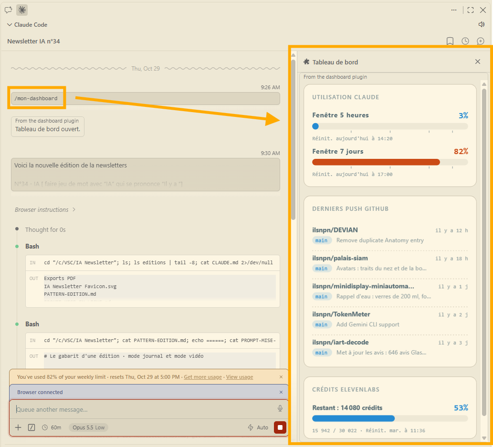

Xiaomi, oui le fabricant de smartphones, publie MiMo 2.6 en deux versions, Pro et Flash, pensées pour agir, coder, créer et piloter des outils. Tout est ouvert · les poids, le code d'entraînement et 7 000 environnements, sous licence MIT, la plus permissive qui soit. Les scores restent à confirmer par des tests indépendants, mais un atelier aussi ouvert a de quoi faire transpirer les laboratoires américains.
Cinéma · Mini-sériesSelon ce témoignage, certains géants du cinéma seraient passés de 80 équipes de tournage à 3. La raison est comptable · une équipe humaine coûte trop cher face à une petite cellule qui enchaîne les mini-séries avec l'IA. Le chiffre reste à confirmer, mais le format, ces séries verticales en épisodes d'une minute, connaît déjà un succès considérable en Chine.
DeepSeek sort Harness, une alternative open source à Claude Code, qui a déjà récolté 230 000 étoiles sur GitHub. Presque tout y est un plugin · modèles, outils, sessions, boucles d'agents, jusqu'à l'interface. On peut même y brancher Claude ou Codex comme sous-agents, ou des modèles locaux via Ollama. On apporte ses propres clés et on ne paie que les modèles utilisés, à moitié prix en heures creuses chez DeepSeek.
Éducation · France et ChineDeux approches opposées. En France, se servir de l'IA quand la consigne l'interdit relève de la fraude. En Chine, les élèves apprennent à l'utiliser très tôt, et son usage devient obligatoire. Seule exception, les grands examens · les géants de la tech s'engagent alors à couper leurs chatbots. L'idée est simple, apprendre avec l'IA, puis vérifier ce qu'on sait faire sans elle.
Chine · Riposte expressSouvenez-vous du N°30 · Jev, lancé par un ancien d'OpenAI, l'IA qui ne parle pas mais décide, deux cents fois plus rapide que ChatGPT. À peine sorti, il a déjà son équivalent chinois, et selon le compte robinnat, il est même déjà battu. C'est devenu la règle · un outil fait le buzz, une équipe chinoise publie sa version quelques semaines plus tard, souvent ouverte et moins chère.
Avant, on apprenait l'outil. Désormais, c'est l'outil qui s'adapte à nous. Avec les mods de Claude Code, on décrit ce qu'on veut et Claude le construit puis l'active · des sessions qui se parlent entre elles, des tâches simples confiées au petit modèle Haiku, une interface taillée sur mesure. Peu de gens savent encore s'en servir. Démonstration dans la rubrique Expérimentation de cette édition.
OpenAI · 21 octobreSon modèle GPT-5.6 Sol a mis au jour deux failles critiques de PHP, baptisées PHP2Shell, qui permettent de prendre le contrôle de serveurs web. OpenAI lance Patch the Planet, un cadre de divulgation coordonnée entre chercheurs, organisations touchées et agences publiques, avec un outil Codex pour vérifier si un site est compromis et 1 milliard de dollars pour sa plateforme d'audit Daybreak. Les IA trouvent les failles plus vite qu'on ne les corrige.
OpenAI annonce que ses modèles ont résolu 400 problèmes mathématiques sur lesquels l'humanité planchait, parfois depuis des années. Les mathématiciens accusent le coup. Reste à faire la part des vraies percées et des problèmes moins célèbres, mais à ce rythme, la machine mériterait une bonne douzaine de médailles Fields. Le commentaire du compte __daddy_raph__ résume l'ambiance · « On n'est pas prêts ».
Nvidia · Cartes graphiquesNvidia vend les pioches de la ruée vers l'IA, et bride certaines de ses cartes graphiques grand public. Le compte leotechmaker montre comment l'IA aide justement à lever ces limites et à récupérer la puissance que le constructeur garde sous le pied. L'arroseur arrosé · la technologie qui fait la fortune de Nvidia sert maintenant à contourner ses propres verrous. À manier avec prudence, la garantie n'apprécie pas forcément.
Travaux pratiques sur les mods de Claude Code. J'ai décrit ce que je voulais, Claude l'a construit · je tape /mon-dashboard et un panneau s'ouvre à côté de la conversation, avec ma consommation Claude sur 5 heures et sur 7 jours, mes derniers envois sur GitHub et les crédits restants de ma voix de synthèse. Si vous l'essayez à votre tour, venez me le dire, mais gardez l'info pour vous · c'est ma façon de savoir qui lit jusqu'au bout.
Cas pratique tiré du travail, anonymisé · présenter un groupe de dix personnes de l'entreprise dans un document Word, avec photo, poste et quelques lignes sur chacun. Trois candidats, moi à la main, Microsoft Copilot et Claude avec Claude Code, avec exactement les mêmes textes et photos. Verdict sur la mise en forme · 3 sur 10 pour l'humain, 6 pour Copilot, 9 pour Claude. Précision honnête, c'est Claude qui a établi la grille.
